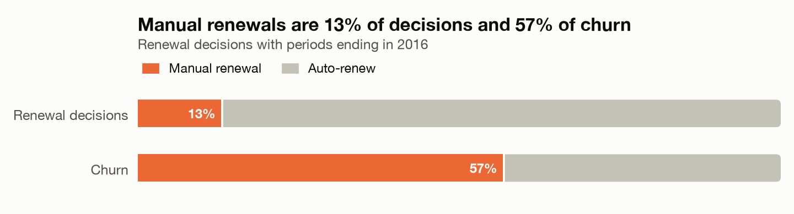

I help product teams decide what to change, and then check whether it worked.
Seven years of SQL, Python and A/B testing across B2B SaaS, a real estate
marketplace, lending and food delivery: AgencyAnalytics, CoreLogic, Vault Credit,
Opal Balance and Uber Eats.
My work at those companies is under NDA, so this page shows case studies on public
data instead. Each one starts from raw data and ends with a decision and a way to
test it, not with a chart.
Based in Calgary, open to remote roles in Canada.
Case studies
SubscriptionsProduct analytics, end to end
Who is a music streaming service losing, and what would I change?
KKBox, a Taiwanese music streaming service, grew its paying base by 30% in
14 months, but about 3.3% of subscribers left every month, roughly as many as it
signed up. I modelled 23M real billing transactions and 410M days of listening to
find where that churn came from.

What I found
Manual renewals were 13% of renewal decisions and 57% of churn.
The first renewal is the riskiest moment: 11% of new subscribers leave there.
Channels, long plans and free trials looked bad only because their users pay manually.
Subscribers who switched to auto-renew churned at about a third of the rate of those who stayed manual.
Before any of that, the data had to be fixed: the dataset's own churn label counted 38% of "churners" who were still subscribed.
What I'd do: switch auto-renew on by default at checkout in the
channels where most people pay manually, and test it on churn at the first renewal,
with checkout conversion as a guardrail.
An A/B test on a simulated mobile game where the true effects are known: sample size,
the four ways tests go wrong in practice, CUPED, and a ship / don't ship memo.
CryptoAI-assisted analyticsIn progress
How much of an analyst's work can an AI agent take?
An agent connected to BigQuery on-chain data through MCP, with a metric layer so it
can't invent definitions, and an honest look at where it still needs a human.